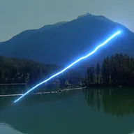

Energiestraal

Tekent een gloeiende lichtstraal met een felle kern en een zachte halo tussen twee punten, die kan wiebelen en over zijn lengte kan groeien.
Instellingen
| Instelling | Type | Bereik | Standaard |
|---|---|---|---|
| Begin | Punt (X, Y) | -4000 px tot 4000 px | -150 px, 100 px |
| Einde | Punt (X, Y) | -4000 px tot 4000 px | 150 px, -100 px |
| Gloedkleur | Kleur | – | #4DA6FF |
| Halokleur | Kleur | – | #2B5CFF |
| Breedte | Getal | 0.5 tot 100 | 6 |
| Gloed | Getal | 0 tot 4 | 1.2 |
| Halo | Getal | 0 tot 4 | 0.5 |
| Halobreedte | Getal | 1 tot 400 | 40 |
| Voortgang | Getal | 0 tot 1 | 1 |
| Lengte | Getal | 0 tot 1 | 1 |
| Wiebelen | Getal | 0 tot 2 | 0.3 |
| Frequentie | Getal | 0.1 tot 100 | 6 |
| Evolutie | Getal | -1000 tot 1000 | 0 |
| Dekking | Getal | 0 tot 1 | 1 |
| Achtergrond dimmen | Getal | 0 tot 1 | 0.4 |
| Mengen | Keuze | Optellen, Bleken, Normaal | Optellen |